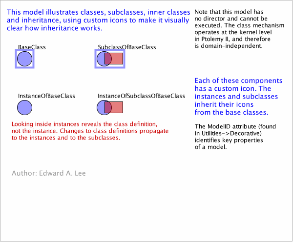

ClassesIllustrated
Below is a browsable image of the model.
For an executable version,
WebStart version
.
(
Java Plug-in Required
)
To view or save the MoML file for this model,
click here
.

Your browser does not support JavaScript so moving the mouse over the actors will not display their parameters. To enable JavaScript, consult the security preferences of your browser.
See
http://support.microsoft.com/gp/howtoscript
for details.